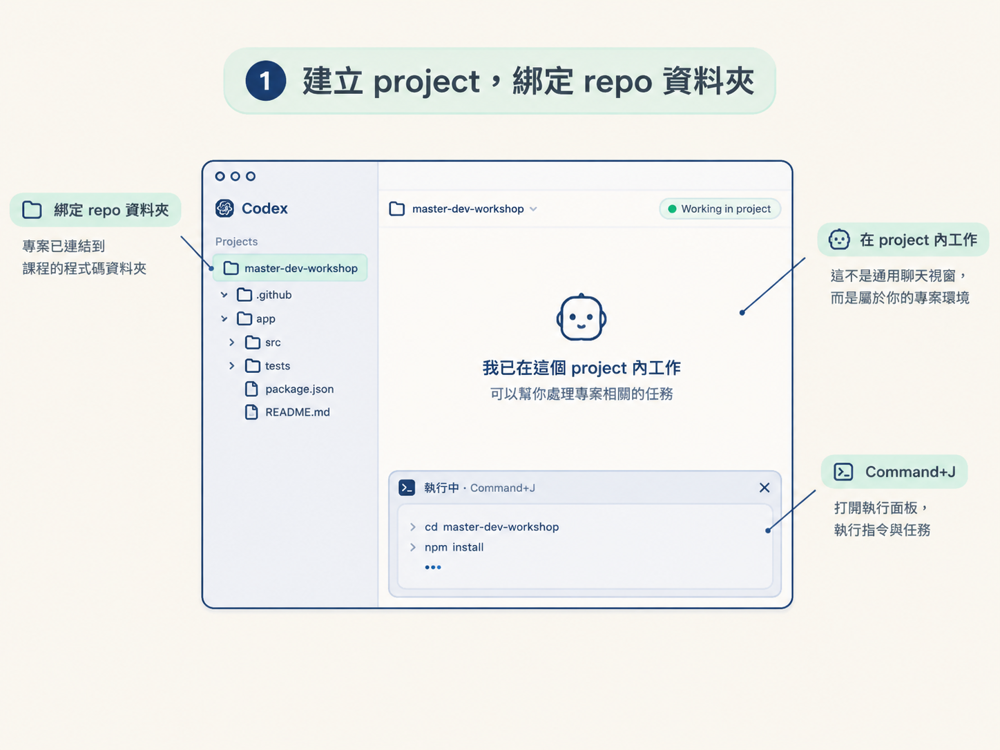
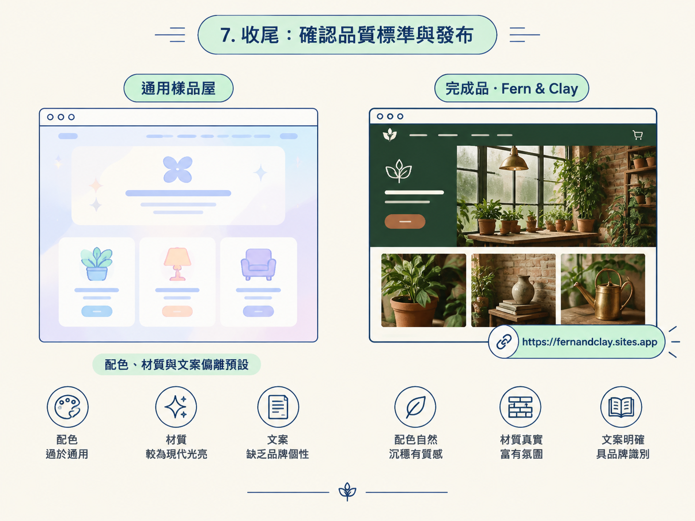

前四節給的都是零件：你知道「AI 味」從哪裡來、認識兩個擋味道的 skill、學會決定視覺方向、也看過一份六塊結構的 brief。零件有了，但真要動手，腦中還缺一條完整的動線：打開 Codex 之後第一個動作是什麼？哪一步會翻車？最後怎麼確認自己做出來的不是樣品屋？
這一節就是把零件組起來的過程。主角是動作與指令，每一步我都講兩件事：你做了什麼，以及做完應該看到什麼。照著走完，你手上會有一個真的有視覺方向、發布得出去的 landing page。
動手前先備好三樣東西：裝好 Codex 桌面 app 的電腦、一份 ChatGPT 訂閱（要發布到 Sites 至少需要 Plus），以及課程 repo。把 repo 抓到你想工作的位置：
git clone https://github.com/katia-openai/master-dev-workshop特別用這個 repo，是因為裡面帶著我們需要的兩個 skill：write-practical-copy 與 design-ui-with-restraint。接下來的 project 會直接綁在這個資料夾上，skill 才讀得到。
在 Codex app 新增一個 project，選取剛剛 clone 下來的資料夾。這一步是後面所有工具能作用的前提：有了 project，Codex 才知道檔案要產生在哪裡、指令要在哪裡跑，內建瀏覽器也才有東西可以開來看。
預期看到：介面顯示你正在這個 project 內工作，而不是一個沒有歸屬的通用聊天視窗。

建立新對話。如果你之前在同一個 repo 跑過類似的專案，建議開一個新的分支或 worktree，讓它從空白開始，不會被前面留下的東西干擾。至於 reasoning effort，如果這次只是做一個單純的 landing page，選 medium 就夠，不必動用最重的思考資源。
預期看到：一個新的、乾淨的對話起點。
這裡有個常見的坑：新版模型很主動，它可能會自己去翻其他 worktree，找到看起來能用的成果就直接沿用。如果你要的是「從零開始」，最好在 prompt 裡明講，補上這麼一句：
Please do not look at other work trees. Start from scratch.把上一節拆解好的 prompt 整段貼進對話。換成你自己的主題時，只要替換第二區塊的對象、第三區塊的視覺方向、第四區塊的內容就好，結構不用動。範例全文如下：
Create a new site in a folder called `lp-example` using Sites.
Build a landing page for Fern & Clay, a fictional neighbourhood plant shop and working greenhouse in Stoke Newington, London.
Use the `design-ui-with-restraint` and `write-practical-copy` skills.
The page should feel like an old London winter garden: fogged greenhouse glass, weathered brick, aged timber, linen, terracotta pots and small brass details. Use a natural palette dominated by deep greens, with muted terracotta, cream and brass accents. Pair an elegant serif typeface with simple, readable supporting typography.
Keep the design warm, editorial and spacious. It should feel authentic and quaint, like a real independent shop people would want to visit—not a generic lifestyle brand or modern dashboard.
Include a strong greenhouse-led hero, plants currently available, practical plant-care help, small workshops, opening hours, local delivery and complete visit information. Keep the copy concrete and useful.
Generate realistic editorial photography for the page using image generation. Show leafy plants throughout, along with the greenhouse interior, plant benches, a potting workshop and the shopfront. Avoid bright colours, glossy surfaces, excessive decoration and clutter.
Make the page responsive, accessible and polished, then publish it privately with Sites.預期看到：Codex 開始在 lp-example 資料夾裡建立專案結構，並且邊做邊用內建瀏覽器檢查畫面。按 Command+J 打開底部面板，就能看到它實際跑了哪些指令。
如果 prompt 裡已經指名了兩個 skill，通常不用再理它。但若你沒指名、或想再確認一次清單，在 Codex 的輸入框打一個 $，就會列出所有可用的 skill：包含裝在個人層級的，以及這個 project 專屬的。看到那兩個 skill 被讀取到，才代表它們的規則真的會生效。
預期看到：skill 清單浮出來，且這兩個 skill 被納入這次的工作。
若你對視覺方向還沒想法，先別急著進建置。可以用語音按鈕跟 Codex 即時聊一輪，或直接在對話裡要它生成三個不同的視覺概念。等概念圖出來，挑一個你真的喜歡的，再叫它照那個方向建成新資料夾，例如：
Build the last concept in a new folder called Beach Club Vibes.預期看到：幾張風格明顯不同的概念圖，接著是依你挑的那個方向建出來的頁面。若你本來就有明確方向，這個分支可以整個跳過，直接進下一步。
回頭確認 brief 有沒有講清楚圖片的風格（範例用的是「真實的編輯式攝影」），以及哪些畫面要出現、哪些要避開。這一塊少寫，模型很可能自行改用 SVG 插畫，成品會離你的預期很遠。想換調性的話，這裡就是調整的時機。
預期看到：頁面用的是攝影質感的圖片，而不是向量插畫。
最後確認兩件事都交代到了：頁面要響應式、無障礙、精緻，以及用 Sites 私下發布。發布這步通常一句話就能完成，結束會給你一個可以分享的網址。
預期看到：一個能全螢幕瀏覽的完整頁面，加上一個發布後的網址。拿它跟前面幾節講的「樣品屋」對照一下，配色、材質與文案應該已經明顯偏離預設。

從空白對話到上線頁面，整條動線是：綁定 repo 資料夾的 project → 乾淨的新對話與 medium effort → 貼上六區塊 brief → 確認 skill 生效 →（需要時）要三個概念並挑一個建出來 → 指定圖片風格 → 收尾發布。做完你手上會有一個「看起來像真的、而且一眼認得出是你的方向」的 landing page，而不是又一間樣品屋。
想驗收方向感對不對，回頭看第一節的判準就好：它有沒有離開每個人都會拿到的預設？如果答案還是「有點像」，多半是視覺方向那一塊寫得還不夠具體，而不是模型的問題，這時候該改的是 brief 的第三區塊，不是換模型。